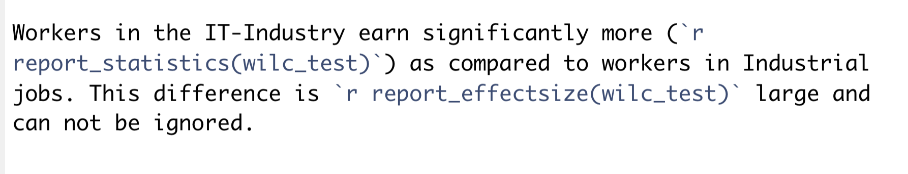

This post as a video
I recommend to watch a video first, because I highlight things I talk about. It’s less then 8 minutes long.
Why do we need {report}?
The result of a statistical test are often hardly digestible. So, what we really want is the small but condense peace of text about what our result are and what they mean. And that’s what the {report} package gives you.

Here is a preliminary list of objects you can report now, in Julne, 2022. However, the package constantly improves and will only get better over time:
Correlations, t-tests, Wilcoxon tests, paired & unpaired (htest)
ANOVAs one-way, two-way etc. (aov, anova, aovlist, …)
Bayes factors (from bayestestR)
… (more tests to come)
Regression models (glm, lm, …)
Mixed-effects models (glmer, lmer, glmmTMB, …)
Bayesian models (stanreg, brms…)
Structural Equation Models (SEM) (from lavaan)
… (more models to come)
Model comparison (from performance())
System and packages (sessionInfo)
Dataframes and vectors
… (more features to come)
1. Reporting Statistical Tests
Load all needed packages at once, to avoid interruptions.
Welch t-test
t.test(wage ~ jobclass, data = Wage)
Welch Two Sample t-test
data: wage by jobclass
t = -11.489, df = 2714.9, p-value < 2.2e-16
alternative hypothesis: true difference in means between group 1. Industrial and group 2. Information is not equal to 0
95 percent confidence interval:
-20.21940 -14.32378
sample estimates:
mean in group 1. Industrial mean in group 2. Information
103.3211 120.5927 The usual output of a t-test is … not really appealing … to say the least. And if we’d try to write down the results, we might end up reporting only a p-value. However, if we add only one word to this code, we’ll get SOO MUCH MORE:
Effect sizes were labelled following Cohen’s (1988) recommendations.
The Welch Two Sample t-test testing the difference of wage by jobclass (mean in group 1. Industrial = 103.32, mean in group 2. Information = 120.59) suggests that the effect is negative, statistically significant, and small (difference = -17.27, 95% CI [-20.22, -14.32], t(2714.87) = -11.49, p < .001; Cohen’s d = -0.44, 95% CI [-0.52, -0.36])
- First of all, we’ll get a digestible peace of text, suitable for any publication instantly, with all important statistics, brackets and special characters. If you think it’s not a big deal, try to rewrite it at least once without a single mistake 😉
- Secondly, it gives us the difference between groups with 95% Confidence Intervals, while the test only provides the confidence intervals of … probably difference, but not the difference itself - the very thing we are interested in!
- On top of that,
report()function provides a humanly readable p-value of under 0.001, instead of the strange scientific notation, nobody really likes and only a few understand. - And finally, it not only calculates the effect size with 95% Confidence Intervals for us, which a classic test doesn’t do, but also interprets it and even provides a reference.
Student’s Two Sample t-test
Effect sizes were labelled following Cohen’s (1988) recommendations.
The Two Sample t-test testing the difference between iris\(Sepal.Width and iris\)Sepal.Length (mean of x = 3.06, mean of y = 5.84) suggests that the effect is negative, statistically significant, and large (difference = -2.79, 95% CI [-2.94, -2.64], t(298) = -36.46, p < .001; Cohen’s d = -4.21, 95% CI [-4.61, -3.80])
Paired Two Sample t-test
Effect sizes were labelled following Cohen’s (1988) recommendations.
The Paired t-test testing the difference between iris\(Sepal.Width and iris\)Sepal.Length (mean of the differences = -2.79) suggests that the effect is negative, statistically significant, and large (difference = -2.79, 95% CI [-2.94, -2.63], t(149) = -34.82, p < .001; Cohen’s d = -2.84, 95% CI [-3.66, -2.49])
Wilcoxon rank sum test (aka Mann-Whitney test)
Reporting results of nonparametric tests, for example Wilcoxon test,
is even more useful! Because the report() function
correctly says: “The Wilcoxon rank sum test is testing the
difference in ranks…”, while even some scientific papers
mistakenly say that Wilcoxon test is testing the difference in
medians, which is just wrong, medians are only used to better
describe not-normally distributed data, but medians are not used to
compare groups. If fact the difference in ranks can be significant even
when medians are identical. Here again, report() function
applies a rank biserial correlation coefficient as a
suitable effect size for Wilcoxon rank sum test with a
reference. As you can see, {report} package not only produces more
results in a suitable for publication form, but also ensures a
correct interpretation of results.

wilc_test <- wilcox.test(Wage$wage ~ Wage$jobclass)
report(wilc_test)
Effect sizes were labelled following Funder’s (2019) recommendations.
The Wilcoxon rank sum test with continuity correction testing the difference in ranks between Wage\(wage and Wage\)jobclass suggests that the effect is negative, statistically significant, and medium (W = 8.53e+05, p < .001; r (rank biserial) = -0.24, 95% CI [-0.28, -0.20])
By the way, we can easily integrate parts of the
results into the text of our manuscript, if we prepare our
manuscript in RStudio. For instance if we use
report_statistics() function in the middle of the text,
only numbers from our test will be incorporated into the text. The
report_effectsize() function would only report the effect
size. Here is how it looks like inside of RStudio and in the
manuscript:

Workers in the IT-Industry earn significantly more (W = 8.53e+05, p < .001; r (rank biserial) = -0.24, 95% CI [-0.28, -0.20]) as compared to workers in Industrial jobs. This difference is medium (r (rank biserial) = -0.24, 95% CI [-0.28, -0.20]) large and can not be ignored.
Paired Wilcoxon signed rank test
report(wilcox.test(iris$Sepal.Width, iris$Sepal.Length, paired = TRUE))
Effect sizes were labelled following Funder’s (2019) recommendations.
The Wilcoxon signed rank test with continuity correction testing the difference in ranks between iris\(Sepal.Width and iris\)Sepal.Length suggests that the effect is negative, statistically significant, and very large (W = 0.00, p < .001; r (rank biserial) = -1.00, 95% CI [-1.00, -1.00])
Pearson’s correlation
Similarly we can easily report the results of either parametric
Pearson or non-parametric Spearman or Kendall correlations. Besides,
report_table() function allows you to display your result
as a table instead of text (see Kendall’s correlation below).
Effect sizes were labelled following Funder’s (2019) recommendations.
The Pearson’s product-moment correlation between mtcars\(mpg and mtcars\)wt is negative, statistically significant, and very large (r = -0.87, 95% CI [-0.93, -0.74], t(30) = -9.56, p < .001)
Spearman’s rank correlation
Effect sizes were labelled following Funder’s (2019) recommendations.
The Spearman’s rank correlation rho between mtcars\(mpg and mtcars\)wt is negative, statistically significant, and very large (rho = -0.89, S = 10292.32, p < .001)
Kendall’s rank correlation (as a table)
cor.test(mtcars$mpg, mtcars$wt, method = "kendall") %>%
report_table()
Parameter1 | Parameter2 | tau | z | p | Method | Alternative
-----------------------------------------------------------------------------------------------
mtcars$mpg | mtcars$wt | -0.73 | -5.80 | < .001 | Kendall's rank correlation tau | two.sidedReporting ANOVAs
The ANOVA (formula: wt ~ am + mpg) suggests that:
- The main effect of am is statistically significant and large (F(1, 29) = 69.21, p < .001; Eta2 (partial) = 0.70, 95% CI [0.54, 1.00])
- The main effect of mpg is statistically significant and large (F(1, 29) = 46.12, p < .001; Eta2 (partial) = 0.61, 95% CI [0.42, 1.00])
Effect sizes were labelled following Field’s (2013) recommendations.
2. Reporting Regression Models
Reporting (General) Linear Models
Call:
lm(formula = mpg ~ am + hp, data = mtcars)
Residuals:
Min 1Q Median 3Q Max
-4.3843 -2.2642 0.1366 1.6968 5.8657
Coefficients:
Estimate Std. Error t value Pr(>|t|)
(Intercept) 26.584914 1.425094 18.655 < 2e-16 ***
am 5.277085 1.079541 4.888 3.46e-05 ***
hp -0.058888 0.007857 -7.495 2.92e-08 ***
---
Signif. codes: 0 '***' 0.001 '**' 0.01 '*' 0.05 '.' 0.1 ' ' 1
Residual standard error: 2.909 on 29 degrees of freedom
Multiple R-squared: 0.782, Adjusted R-squared: 0.767
F-statistic: 52.02 on 2 and 29 DF, p-value: 2.55e-10But enough about tests, let’s see how {report} package handles
models. First of all, the usual summary of a model provides some useful
information but the output is again, not very friendly to the human eye,
and it is not clear how to describe it. I bet 10 researchers would
report these results in 10 slightly different ways. In contrast {report}
package provides a standardized way to report model-results, and again
delivers soo much more then the classic
summary() function. Particularly,
- it describes what kind of model we used, while the
summary()does not - it interprets the \(R^2\) and \(adj.R^2\), while the
summary()does not - it uncovers what is behind the mysterious (Intercept),
while the
summary()assumes that you already know it - and finally,
report()functions describes parameters “am” and “hp” by providing the slope with useful! 95% Confidence Intervals, while thesummary()gives you not really useful Standard Error of the Mean
report(model)
We fitted a linear model (estimated using OLS) to predict mpg with am and hp (formula: mpg ~ am + hp). The model explains a statistically significant and substantial proportion of variance (R2 = 0.78, F(2, 29) = 52.02, p < .001, adj. R2 = 0.77). The model’s intercept, corresponding to am = 0 and hp = 0, is at 26.58 (95% CI [23.67, 29.50], t(29) = 18.65, p < .001). Within this model:
- The effect of am is statistically significant and positive (beta = 5.28, 95% CI [3.07, 7.48], t(29) = 4.89, p < .001; Std. beta = 0.44, 95% CI [0.25, 0.62])
- The effect of hp is statistically significant and negative (beta = -0.06, 95% CI [-0.07, -0.04], t(29) = -7.50, p < .001; Std. beta = -0.67, 95% CI [-0.85, -0.49])
Standardized parameters were obtained by fitting the model on a standardized version of the dataset. 95% Confidence Intervals (CIs) and p-values were computed using the Wald approximation.
In fact, if used for models, the report() function gives
you more than you might want to use. That is why you can apply a
summary() command ON TOP OF THE REPORT 🤣
in order to report only essential information.
We fitted a linear model to predict mpg with am and hp. The model’s explanatory power is substantial (R2 = 0.78, adj. R2 = 0.77). The model’s intercept is at 26.58 (95% CI [23.67, 29.50]). Within this model:
- The effect of am is statistically significant and positive (beta = 5.28, 95% CI [3.07, 7.48], t(29) = 4.89, p < .001, Std. beta = 0.44)
- The effect of hp is statistically significant and negative (beta = -0.06, 95% CI [-0.07, -0.04], t(29) = -7.50, p < .001, Std. beta = -0.67)
Similarly to test results, you can display model results as a table
with the report_table() command, or use different parts of
the report inside of your text with:
report_model(), report_performance(), report_parameters(), report_statistics()
or report_effectsize() functions:
report_table(model)
Parameter | Coefficient | 95% CI | t(29) | p | Std. Coef. | Std. Coef. 95% CI | Fit
-----------------------------------------------------------------------------------------------------
(Intercept) | 26.58 | [23.67, 29.50] | 18.65 | < .001 | -2.32e-17 | [-0.17, 0.17] |
am | 5.28 | [ 3.07, 7.48] | 4.89 | < .001 | 0.44 | [ 0.25, 0.62] |
hp | -0.06 | [-0.07, -0.04] | -7.50 | < .001 | -0.67 | [-0.85, -0.49] |
| | | | | | |
AIC | | | | | | | 164.01
BIC | | | | | | | 169.87
R2 | | | | | | | 0.78
R2 (adj.) | | | | | | | 0.77
Sigma | | | | | | | 2.91report_model(model)
linear model (estimated using OLS) to predict mpg with am and hp (formula: mpg ~ am + hp)
report_performance(model)
The model explains a statistically significant and substantial proportion of variance (R2 = 0.78, F(2, 29) = 52.02, p < .001, adj. R2 = 0.77)
report_parameters(model)
The intercept is statistically significant and positive (beta = 26.58, 95% CI [23.67, 29.50], t(29) = 18.65, p < .001; Std. beta = -2.32e-17, 95% CI [-0.17, 0.17]), The effect of am is statistically significant and positive (beta = 5.28, 95% CI [3.07, 7.48], t(29) = 4.89, p < .001; Std. beta = 0.44, 95% CI [0.25, 0.62]), The effect of hp is statistically significant and negative (beta = -0.06, 95% CI [-0.07, -0.04], t(29) = -7.50, p < .001; Std. beta = -0.67, 95% CI [-0.85, -0.49])
report_statistics(model)
beta = 26.58, 95% CI [23.67, 29.50], t(29) = 18.65, p < .001; Std. beta = -2.32e-17, 95% CI [-0.17, 0.17], beta = 5.28, 95% CI [3.07, 7.48], t(29) = 4.89, p < .001; Std. beta = 0.44, 95% CI [0.25, 0.62], beta = -0.06, 95% CI [-0.07, -0.04], t(29) = -7.50, p < .001; Std. beta = -0.67, 95% CI [-0.85, -0.49]
report_effectsize(model)
very small (Std. beta = -2.32e-17, 95% CI [-0.17, 0.17]), small (Std. beta = 0.44, 95% CI [0.25, 0.62]), medium (Std. beta = -0.67, 95% CI [-0.85, -0.49])
Logistic regression
We fitted a logistic model (estimated using ML) to predict am with mpg (formula: am ~ mpg). The model’s explanatory power is substantial (Tjur’s R2 = 0.37). The model’s intercept, corresponding to mpg = 0, is at -6.60 (95% CI [-12.33, -2.77], p = 0.005). Within this model:
- The effect of mpg is statistically significant and positive (beta = 0.31, 95% CI [0.12, 0.59], p = 0.008; Std. beta = 1.85, 95% CI [0.74, 3.54])
Standardized parameters were obtained by fitting the model on a standardized version of the dataset. 95% Confidence Intervals (CIs) and p-values were computed using
Mixed-effects / multilevel models
summary(mixed_model)
Linear mixed model fit by REML ['lmerMod']
Formula: Reaction ~ Days + (Days | Subject)
Data: sleepstudy
REML criterion at convergence: 1743.6
Scaled residuals:
Min 1Q Median 3Q Max
-3.9536 -0.4634 0.0231 0.4634 5.1793
Random effects:
Groups Name Variance Std.Dev. Corr
Subject (Intercept) 612.10 24.741
Days 35.07 5.922 0.07
Residual 654.94 25.592
Number of obs: 180, groups: Subject, 18
Fixed effects:
Estimate Std. Error t value
(Intercept) 251.405 6.825 36.838
Days 10.467 1.546 6.771
Correlation of Fixed Effects:
(Intr)
Days -0.138The {report} package can report logistic regressions, but this is not really surprising. Surprising is however, that it can also easily handle Linear Mixed-Effects models, whose popularity and usage is currently exploding. The function explicitly describes random effects and interprets the explanatory power of the model with two coefficients of determination, conditional \(R^2\) for the whole model (including random effects) and the marginal \(R^2\) for only fixed effects, or only predictors without random effects.
report(mixed_model)
We fitted a linear mixed model (estimated using REML and nloptwrap optimizer) to predict Reaction with Days (formula: Reaction ~ Days). The model included Days and Subject as random effects (formula: ~Days | Subject). The model’s total explanatory power is substantial (conditional R2 = 0.80) and the part related to the fixed effects alone (marginal R2) is of 0.28. The model’s intercept, corresponding to Days = 0, is at 251.41 (95% CI [237.94, 264.87], t(174) = 36.84, p < .001). Within this model:
- The effect of Days is statistically significant and positive (beta = 10.47, 95% CI [7.42, 13.52], t(174) = 6.77, p < .001; Std. beta = 0.54, 95% CI [0.38, 0.69])
Standardized parameters were obtained by fitting the model on a standardized version of the dataset. 95% Confidence Intervals (CIs) and p-values were computed using
report_random(mixed_model)
The model included Days and Subject as random effects (formula: ~Days | Subject)
Reporting Bayesian Models and Bayesian Mixed-Effects models
Bayesian models can also be reported using the new Sequential Effect eXistence and sIgnificance Testing framework, or abbreviated - SEXIT 😁 (I swear I did not made it up).
This report describes:
- how Markov Chain Monte Carlo was computed,
- which primers were used
- it calculates the coefficient of determination \(R^2\) and interprets the performance of the model
- conducts Bayesian probabilistic hypothesis testing via SEXIT 😁
- and provides references for reported metrics, so that you can learn more if something is not completely clear
The full report for Bayesian models is huge though, but here you also
can use parts of the report effortlessly. Just choose what you want to
include into your text with one of the following functions:
report_priors(), report_model(), report_performance(), report_parameters(), report_statistics()
or report_effectsize().
report(bayes_model)
We fitted a Bayesian linear model (estimated using MCMC sampling with 4 chains of 2000 iterations and a warmup of 1000) to predict mpg with qsec and wt (formula: mpg ~ qsec + wt). Priors over parameters were set as normal (mean = 0.00, SD = 8.43) and normal (mean = 0.00, SD = 15.40) distributions. The model’s explanatory power is substantial (R2 = 0.81, 95% CI [0.70, 0.89], adj. R2 = 0.79). The model’s intercept, corresponding to qsec = 0 and wt = 0, is at 19.83 (95% CI [9.13, 30.38]). Within this model:
- The effect of qsec (Median = 0.92, 95% CI [0.38, 1.47]) has a 99.92% probability of being positive (> 0), 98.95% of being significant (> 0.30), and 0.18% of being large (> 1.81). The estimation successfully converged (Rhat = 1.000) and the indices are reliable (ESS = 3847)
- The effect of wt (Median = -5.06, 95% CI [-6.04, -4.06]) has a 100.00% probability of being negative (< 0), 100.00% of being significant (< -0.30), and 100.00% of being large (< -1.81). The estimation successfully converged (Rhat = 1.000) and the indices are reliable (ESS = 4376)
Following the Sequential Effect eXistence and sIgnificance Testing (SEXIT) framework, we report the median of the posterior distribution and its 95% CI (Highest Density Interval), along the probability of direction (pd), the probability of significance and the probability of being large. The thresholds beyond which the effect is considered as significant (i.e., non-negligible) and large are |0.30| and |1.81| (corresponding respectively to 0.05 and 0.30 of the outcome’s SD). Convergence and stability of the Bayesian sampling has been assessed using R-hat, which should be below 1.01 (Vehtari et al., 2019), and Effective Sample Size (ESS), which should be greater than 1000 (Burkner, 2017).
report_priors(bayes_model)
Priors over parameters were set as normal (mean = 0.00, SD = 8.43) and normal (mean = 0.00, SD = 15.40) distributions
report_model(bayes_model)
Bayesian linear model (estimated using MCMC sampling with 4 chains of 2000 iterations and a warmup of 1000) to predict mpg with qsec and wt (formula: mpg ~ qsec + wt). Priors over parameters were set as normal (mean = 0.00, SD = 8.43) and normal (mean = 0.00, SD = 15.40) distributions
report_performance(bayes_model)
The model’s explanatory power is substantial (R2 = 0.81, 95% CI [0.70, 0.89], adj. R2 = 0.79)
report_parameters(bayes_model)
The intercept (Median = 19.83, 95% CI [9.13, 30.38]) has a 99.92% probability of being positive (> 0), 99.92% of being significant (> 0.30), and 99.80% of being large (> 1.81). The estimation successfully converged (Rhat = 1.000) and the indices are reliable (ESS = 3758), The effect of qsec (Median = 0.92, 95% CI [0.38, 1.47]) has a 99.92% probability of being positive (> 0), 98.95% of being significant (> 0.30), and 0.18% of being large (> 1.81). The estimation successfully converged (Rhat = 1.000) and the indices are reliable (ESS = 3847), The effect of wt (Median = -5.06, 95% CI [-6.04, -4.06]) has a 100.00% probability of being negative (< 0), 100.00% of being significant (< -0.30), and 100.00% of being large (< -1.81). The estimation successfully converged (Rhat = 1.000) and the indices are reliable (ESS = 4376)
report_statistics(bayes_model)
Median = 19.83, 95% CI [9.13, 30.38], pd = 99.92%, 0% in ROPE; Std. beta = -3.21e-03, 95% CI [-0.16, 0.15]; Rhat = 1.00, ESS = 3757.53, Median = 0.92, 95% CI [0.38, 1.47], pd = 99.92%, 9.24% in ROPE; Std. beta = 0.27, 95% CI [0.11, 0.44]; Rhat = 1.00, ESS = 3846.97, Median = -5.06, 95% CI [-6.04, -4.06], pd = 100%, 0% in ROPE; Std. beta = -0.82, 95% CI [-0.98, -0.66]; Rhat = 1.00, ESS = 4375.77
report_effectsize(bayes_model)
very small (Std. beta = -3.67e-04, 95% CI [-0.15, 0.17]), small (Std. beta = 0.27, 95% CI [0.11, 0.44]), large (Std. beta = -0.82, 95% CI [-0.98, -0.66])
report_table(bayes_model)
Parameter | Median | 95% CI | pd | % in ROPE | Rhat | ESS | Prior | Std. Median | Std_Median 95% CI | Fit
-------------------------------------------------------------------------------------------------------------------------------------------------
(Intercept) | 19.83 | [ 9.13, 30.38] | 99.92% | 0% | 1.000 | 3758.00 | Normal (20.09 +- 15.07) | -6.19e-04 | [-0.15, 0.16] |
qsec | 0.92 | [ 0.38, 1.47] | 99.92% | 9.24% | 1.000 | 3847.00 | Normal (0.00 +- 8.43) | 0.27 | [ 0.11, 0.44] |
wt | -5.06 | [-6.04, -4.06] | 100% | 0% | 1.000 | 4376.00 | Normal (0.00 +- 15.40) | -0.82 | [-0.98, -0.66] |
| | | | | | | | | |
ELPD | | | | | | | | | | -79.08
LOOIC | | | | | | | | | | 158.17
WAIC | | | | | | | | | | 157.82
R2 | | | | | | | | | | 0.81
R2 (adj.) | | | | | | | | | | 0.79
Sigma | | | | | | | | | | 2.66Exotic and not-supported models 😨 ???
Despite the large number of models supported, at the time of making this blog (June 2022), {report} package doesn’t support all the models in the world. But it evolves very quick. For instance when you found similar “Error message” to the one you see on the screen, go to this link and let the authors know, what kind of models you want {report} package to be able to handle.
d <- foreign::read.dta("https://stats.idre.ucla.edu/stat/data/hsbdemo.dta")
m <- nnet::multinom(prog ~ ses + write, d)
# weights: 15 (8 variable)
initial value 219.722458
iter 10 value 179.985215
final value 179.981726
convergedreport(m)
Error in report.default(m): Oops, objects of class [multinom, nnet] are not supported (yet) by report() :(
Want to help? Check out https://easystats.github.io/report/articles/new_models.html3. Reporting Data
As text
Now, you can also quickly describe your data by simply using {report} function on your dataset. It provides the most common descriptive statistics for every variable, doesn’t matter numeric or categorical.
report(iris)
The data contains 150 observations of the following 5 variables:
- Sepal.Length: n = 150, Mean = 5.84, SD = 0.83, Median = 5.80, MAD = 1.04, range: [4.30, 7.90], Skewness = 0.31, Kurtosis = -0.55, 0% missing
- Sepal.Width: n = 150, Mean = 3.06, SD = 0.44, Median = 3.00, MAD = 0.44, range: [2, 4.40], Skewness = 0.32, Kurtosis = 0.23, 0% missing
- Petal.Length: n = 150, Mean = 3.76, SD = 1.77, Median = 4.35, MAD = 1.85, range: [1, 6.90], Skewness = -0.27, Kurtosis = -1.40, 0% missing
- Petal.Width: n = 150, Mean = 1.20, SD = 0.76, Median = 1.30, MAD = 1.04, range: [0.10, 2.50], Skewness = -0.10, Kurtosis = -1.34, 0% missing
- Species: 3 levels, namely setosa (n = 50, 33.33%), versicolor (n = 50, 33.33%) and virginica (n = 50, 33.33%)
Besides, {Report} package works perfectly with famous {tidyverse} packages, like {dplyr}. Thus, the data can be easily grouped by any categorical variable, e.g. Species, and the descriptive stats for every level of the grouping variable will be returned:
The data contains 150 observations, grouped by Species, of the following 3 variables:
- setosa (n = 50):
- Petal.Length: n = 50, Mean = 1.46, SD = 0.17, Median = 1.50, MAD = 0.15, range: [1, 1.90], Skewness = 0.11, Kurtosis = 1.02, 0 missing
- Petal.Width: n = 50, Mean = 0.25, SD = 0.11, Median = 0.20, MAD = 0.00, range: [0.10, 0.60], Skewness = 1.25, Kurtosis = 1.72, 0 missing
- versicolor (n = 50):
- Petal.Length: n = 50, Mean = 4.26, SD = 0.47, Median = 4.35, MAD = 0.52, range: [3, 5.10], Skewness = -0.61, Kurtosis = 0.05, 0 missing
- Petal.Width: n = 50, Mean = 1.33, SD = 0.20, Median = 1.30, MAD = 0.22, range: [1, 1.80], Skewness = -0.03, Kurtosis = -0.41, 0 missing
- virginica (n = 50):
- Petal.Length: n = 50, Mean = 5.55, SD = 0.55, Median = 5.55, MAD = 0.67, range: [4.50, 6.90], Skewness = 0.55, Kurtosis = -0.15, 0 missing
- Petal.Width: n = 50, Mean = 2.03, SD = 0.27, Median = 2.00, MAD = 0.30, range: [1.40, 2.50], Skewness = -0.13, Kurtosis = -0.60, 0 missingAs table
Want the same as a huge or a minimalistic table? No, problems! Use
report_table() or report_sample()
functions.
iris %>%
group_by(Species) %>%
report_table()
Group | Variable | n_Obs | Mean | SD | Median | MAD | Min | Max | Skewness | Kurtosis | n_Missing
---------------------------------------------------------------------------------------------------------------
versicolor | Sepal.Length | 50 | 5.94 | 0.52 | 5.90 | 0.52 | 4.90 | 7.00 | 0.11 | -0.53 | 0
versicolor | Sepal.Width | 50 | 2.77 | 0.31 | 2.80 | 0.30 | 2.00 | 3.40 | -0.36 | -0.37 | 0
versicolor | Petal.Length | 50 | 4.26 | 0.47 | 4.35 | 0.52 | 3.00 | 5.10 | -0.61 | 0.05 | 0
versicolor | Petal.Width | 50 | 1.33 | 0.20 | 1.30 | 0.22 | 1.00 | 1.80 | -0.03 | -0.41 | 0
virginica | Sepal.Length | 50 | 6.59 | 0.64 | 6.50 | 0.59 | 4.90 | 7.90 | 0.12 | 0.03 | 0
virginica | Sepal.Width | 50 | 2.97 | 0.32 | 3.00 | 0.30 | 2.20 | 3.80 | 0.37 | 0.71 | 0
virginica | Petal.Length | 50 | 5.55 | 0.55 | 5.55 | 0.67 | 4.50 | 6.90 | 0.55 | -0.15 | 0
virginica | Petal.Width | 50 | 2.03 | 0.27 | 2.00 | 0.30 | 1.40 | 2.50 | -0.13 | -0.60 | 0report_sample(iris, group_by = "Species")
# Descriptive Statistics
Variable | setosa (n=50) | versicolor (n=50) | virginica (n=50) | Total (n=150)
---------------------------------------------------------------------------------------------
Mean Sepal.Length (SD) | 5.01 (0.35) | 5.94 (0.52) | 6.59 (0.64) | 5.84 (0.83)
Mean Sepal.Width (SD) | 3.43 (0.38) | 2.77 (0.31) | 2.97 (0.32) | 3.06 (0.44)
Mean Petal.Length (SD) | 1.46 (0.17) | 4.26 (0.47) | 5.55 (0.55) | 3.76 (1.77)
Mean Petal.Width (SD) | 0.25 (0.11) | 1.33 (0.20) | 2.03 (0.27) | 1.20 (0.76)4. Reporting R environment, packages, system
And finally, using only one command:
report(sessionInfo()) you first report the Statistical
software you used for data analysis, secondly, you list ALL packages you
used and lastly you cite all packages you used automatically without any
typing mistakes! How cool is that? And if you want to know how to find
THE BEST MODEL which you then can report, check out {glmulti}
package!
Analyses were conducted using the R Statistical language (version 4.1.3; R Core Team, 2022) on macOS Big Sur/Monterey 10.16, using the packages flextable (version 0.7.0; David Gohel, 2022), Rcpp (version 1.0.8.3; Dirk Eddelbuettel and Romain Francois, 2011), Matrix (version 1.4.1; Douglas Bates, Martin Maechler and Mikael Jagan, 2022), lme4 (version 1.1.29; Douglas Bates et al., 2015), ISLR (version 1.4; Gareth James et al., 2021), rstanarm (version 2.21.3; Goodrich B et al., 2022), ggplot2 (version 3.3.6; Wickham. ggplot2: Elegant Graphics for Data Analysis. Springer-Verlag New York, 2016.), stringr (version 1.4.0; Hadley Wickham, 2019), forcats (version 0.5.1; Hadley Wickham, 2021), tidyr (version 1.2.0; Hadley Wickham and Maximilian Girlich, 2022), readr (version 2.1.2; Hadley Wickham, Jim Hester and Jennifer Bryan, 2022), dplyr (version 1.0.9; Hadley Wickham et al., 2022), tibble (version 3.1.7; Kirill Müller and Hadley Wickham, 2022), purrr (version 0.3.4; Lionel Henry and Hadley Wickham, 2020), sjPlot (version 2.8.10; Lüdecke D, 2021), report (version 0.5.1; Makowski et al., 2020), ggstatsplot (version 0.9.3; Patil, 2021) and tidyverse (version 1.3.1.9000; Wickham et al., 2019).
References
- David Gohel (2022). flextable: Functions for Tabular Reporting. R package version 0.7.0. https://CRAN.R-project.org/package=flextable
- Dirk Eddelbuettel and Romain Francois (2011). Rcpp: Seamless R and C++ Integration. Journal of Statistical Software, 40(8), 1-18, doi:10.18637/jss.v040.i08.
- Douglas Bates, Martin Maechler and Mikael Jagan (2022). Matrix: Sparse and Dense Matrix Classes and Methods. R package version 1.4-1. https://CRAN.R-project.org/package=Matrix
- Douglas Bates, Martin Maechler, Ben Bolker, Steve Walker (2015). Fitting Linear Mixed-Effects Models Using lme4. Journal of Statistical Software, 67(1), 1-48. doi:10.18637/jss.v067.i01.
- Gareth James, Daniela Witten, Trevor Hastie and Rob Tibshirani (2021). ISLR: Data for an Introduction to Statistical Learning with Applications in R. R package version 1.4. https://CRAN.R-project.org/package=ISLR
- Goodrich B, Gabry J, Ali I & Brilleman S. (2022). rstanarm: Bayesian applied regression modeling via Stan. R package version 2.21.3 https://mc-stan.org/rstanarm.
- H. Wickham. ggplot2: Elegant Graphics for Data Analysis. Springer-Verlag New York, 2016.
- Hadley Wickham (2019). stringr: Simple, Consistent Wrappers for Common String Operations. R package version 1.4.0. https://CRAN.R-project.org/package=stringr
- Hadley Wickham (2021). forcats: Tools for Working with Categorical Variables (Factors). R package version 0.5.1. https://CRAN.R-project.org/package=forcats
- Hadley Wickham and Maximilian Girlich (2022). tidyr: Tidy Messy Data. R package version 1.2.0. https://CRAN.R-project.org/package=tidyr
- Hadley Wickham, Jim Hester and Jennifer Bryan (2022). readr: Read Rectangular Text Data. R package version 2.1.2. https://CRAN.R-project.org/package=readr
- Hadley Wickham, Romain François, Lionel Henry and Kirill Müller (2022). dplyr: A Grammar of Data Manipulation. R package version 1.0.9. https://CRAN.R-project.org/package=dplyr
- Kirill Müller and Hadley Wickham (2022). tibble: Simple Data Frames. R package version 3.1.7. https://CRAN.R-project.org/package=tibble
- Lionel Henry and Hadley Wickham (2020). purrr: Functional Programming Tools. R package version 0.3.4. https://CRAN.R-project.org/package=purrr
- Lüdecke D (2021). sjPlot: Data Visualization for Statistics in SocialScience. R package version 2.8.10, <URL:https://CRAN.R-project.org/package=sjPlot>.
- Makowski, D., Ben-Shachar, M.S., Patil, I. & Lüdecke, D. (2020). Automated Results Reporting as a Practical Tool to Improve Reproducibility and Methodological Best Practices Adoption. CRAN. Available from https://github.com/easystats/report. doi: .
- Patil, I. (2021). Visualizations with statistical details: The ‘ggstatsplot’ approach. Journal of Open Source Software, 6(61), 3167, doi:10.21105/joss.03167
- R Core Team (2022). R: A language and environment for statistical computing. R Foundation for Statistical Computing, Vienna, Austria. URL https://www.R-project.org/.
- Wickham et al., (2019). Welcome to the tidyverse. Journal of Open Source Software, 4(43), 1686, https://doi.org/10.21105/joss.01686
You can also use parts of sessionInfo(), but why would
you? 🤓
Analyses were conducted using the R Statistical language (version 4.1.3; R Core Team, 2022) on macOS Big Sur/Monterey 10.16
flextable (version 0.7.0; David Gohel, 2022), Rcpp (version 1.0.8.3; Dirk Eddelbuettel and Romain Francois, 2011), Matrix (version 1.4.1; Douglas Bates, Martin Maechler and Mikael Jagan, 2022), lme4 (version 1.1.29; Douglas Bates et al., 2015), ISLR (version 1.4; Gareth James et al., 2021), rstanarm (version 2.21.3; Goodrich B et al., 2022), ggplot2 (version 3.3.6; Wickham. ggplot2: Elegant Graphics for Data Analysis. Springer-Verlag New York, 2016.), stringr (version 1.4.0; Hadley Wickham, 2019), forcats (version 0.5.1; Hadley Wickham, 2021), tidyr (version 1.2.0; Hadley Wickham and Maximilian Girlich, 2022), readr (version 2.1.2; Hadley Wickham, Jim Hester and Jennifer Bryan, 2022), dplyr (version 1.0.9; Hadley Wickham et al., 2022), tibble (version 3.1.7; Kirill Müller and Hadley Wickham, 2022), purrr (version 0.3.4; Lionel Henry and Hadley Wickham, 2020), sjPlot (version 2.8.10; Lüdecke D, 2021), report (version 0.5.1; Makowski et al., 2020), ggstatsplot (version 0.9.3; Patil, 2021), R (version 4.1.3; R Core Team, 2022), tidyverse (version 1.3.1.9000; Wickham et al., 2019)
David Gohel (2022). flextable: Functions for Tabular Reporting. R package version 0.7.0. https://CRAN.R-project.org/package=flextable, Dirk Eddelbuettel and Romain Francois (2011). Rcpp: Seamless R and C++ Integration. Journal of Statistical Software, 40(8), 1-18, doi:10.18637/jss.v040.i08., Douglas Bates, Martin Maechler and Mikael Jagan (2022). Matrix: Sparse and Dense Matrix Classes and Methods. R package version 1.4-1. https://CRAN.R-project.org/package=Matrix, Douglas Bates, Martin Maechler, Ben Bolker, Steve Walker (2015). Fitting Linear Mixed-Effects Models Using lme4. Journal of Statistical Software, 67(1), 1-48. doi:10.18637/jss.v067.i01., Gareth James, Daniela Witten, Trevor Hastie and Rob Tibshirani (2021). ISLR: Data for an Introduction to Statistical Learning with Applications in R. R package version 1.4. https://CRAN.R-project.org/package=ISLR, Goodrich B, Gabry J, Ali I & Brilleman S. (2022). rstanarm: Bayesian applied regression modeling via Stan. R package version 2.21.3 https://mc-stan.org/rstanarm., H. Wickham. ggplot2: Elegant Graphics for Data Analysis. Springer-Verlag New York, 2016., Hadley Wickham (2019). stringr: Simple, Consistent Wrappers for Common String Operations. R package version 1.4.0. https://CRAN.R-project.org/package=stringr, Hadley Wickham (2021). forcats: Tools for Working with Categorical Variables (Factors). R package version 0.5.1. https://CRAN.R-project.org/package=forcats, Hadley Wickham and Maximilian Girlich (2022). tidyr: Tidy Messy Data. R package version 1.2.0. https://CRAN.R-project.org/package=tidyr, Hadley Wickham, Jim Hester and Jennifer Bryan (2022). readr: Read Rectangular Text Data. R package version 2.1.2. https://CRAN.R-project.org/package=readr, Hadley Wickham, Romain François, Lionel Henry and Kirill Müller (2022). dplyr: A Grammar of Data Manipulation. R package version 1.0.9. https://CRAN.R-project.org/package=dplyr, Kirill Müller and Hadley Wickham (2022). tibble: Simple Data Frames. R package version 3.1.7. https://CRAN.R-project.org/package=tibble, Lionel Henry and Hadley Wickham (2020). purrr: Functional Programming Tools. R package version 0.3.4. https://CRAN.R-project.org/package=purrr, Lüdecke D (2021). sjPlot: Data Visualization for Statistics in SocialScience. R package version 2.8.10, <URL:https://CRAN.R-project.org/package=sjPlot>., Makowski, D., Ben-Shachar, M.S., Patil, I. & Lüdecke, D. (2020). Automated Results Reporting as a Practical Tool to Improve Reproducibility and Methodological Best Practices Adoption. CRAN. Available from https://github.com/easystats/report. doi: ., Patil, I. (2021). Visualizations with statistical details: The ‘ggstatsplot’ approach. Journal of Open Source Software, 6(61), 3167, doi:10.21105/joss.03167, R Core Team (2022). R: A language and environment for statistical computing. R Foundation for Statistical Computing, Vienna, Austria. URL https://www.R-project.org/., Wickham et al., (2019). Welcome to the tidyverse. Journal of Open Source Software, 4(43), 1686, https://doi.org/10.21105/joss.01686
Further readings and references
All functions from {report} package: https://easystats.github.io/report/reference/index.html
If you think, I missed something, please comment on it, and I’ll improve this tutorial.
Thank you for learning!